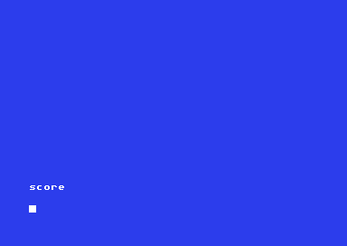

<meta charset="utf-8">
<meta name="viewport" content="width=device-width, initial-scale=1">
<title>{{title}}</title>
<link rel="preconnect" href="https://fonts.googleapis.com">
<link rel="stylesheet" href="https://fonts.googleapis.com/css2?family=Lato:wght@400;700;900&family=IBM+Plex+Mono:wght@400;500&display=swap">
<style>
:root{
  --bg:#23262d; --paper:#e9e7e1; --surface:#ffffff; --surface-2:#f1efea; --line:#d5d3cc; --line-soft:#e0ded8;
  --ink:#2f3136; --ink-soft:#55585f; --ink-mute:#80838a;
  --link:#1f5fa8; --link-hover:#154480; --accent:#1f5fa8;
  --amber:#c25a00; --cyan:#1f5fa8; --coral:#d04a3a; --green:#2a8a4a; --violet:#4a5bd6; --hl:#fff0c2;
  --chip:#2f3136; --chip-ink:#ffffff;
  --c64blue:#40318d; --c64grey:#686868;
  --fd:'Lato',system-ui,sans-serif; --fb:'Lato',system-ui,sans-serif; --fm:'IBM Plex Mono',ui-monospace,Menlo,monospace;
  --col:1080px; --gx:68px; --fs:17px; --lh:1.6; --hw:900; --h1:46px; --h2:26px; --sy:48px; --pp:26px; --r:10px;
  --plate-shadow:0 1px 2px rgba(0,0,0,.05),0 4px 14px rgba(0,0,0,.05);
}
*{box-sizing:border-box}
html{background:var(--bg);min-height:100%}
body{background:var(--paper);color:var(--ink);font-family:var(--fb);font-size:var(--fs);line-height:var(--lh);max-width:var(--col);margin:0 auto;min-height:100vh;padding:0 0 4rem}
h1,h2,h3{font-weight:var(--hw);letter-spacing:-.01em;text-wrap:balance;color:var(--ink);margin:0}
.wrap{padding:0 var(--gx)}
.hero{padding:48px var(--gx) 8px;text-align:left}
.eyebrow{font-family:var(--fm);font-size:12px;letter-spacing:.08em;text-transform:uppercase;color:var(--ink-mute);margin:0 0 10px}
.hero h1{font-size:var(--h1);line-height:1.15;letter-spacing:-.02em;margin:0 0 14px}
.hero .sub{margin:0 0 .6em;color:var(--ink-soft)}
section{padding:var(--sy) 0 24px}
section:last-of-type{border-bottom:none}
.fig{font-family:var(--fm);font-size:12px;letter-spacing:.08em;text-transform:uppercase;color:var(--ink-mute);margin:0 0 10px}
h2.t{font-size:var(--h2);margin-bottom:12px}
.lede{color:var(--ink-soft);margin:0 0 30px}
.plate{background:var(--surface);border:1px solid var(--line);border-radius:var(--r);padding:var(--pp);box-shadow:var(--plate-shadow)}
.cap{font-size:14px;color:var(--ink-mute);margin-top:14px;line-height:1.55}
.cap b{color:var(--ink);font-weight:700}
code{font-family:var(--fm);font-size:.82em;background:var(--chip);color:var(--chip-ink);border-radius:4px;padding:2px 6px;white-space:nowrap}
h3{font-size:19px;margin:24px 0 8px}
kbd{font-family:var(--fm);font-size:.8em;background:var(--surface-2);border:1px solid var(--line);border-bottom-width:2px;border-radius:4px;padding:1px 6px;white-space:nowrap}
table{border-collapse:collapse;width:100%;font-size:15px}
th,td{text-align:left;padding:6px 10px;border-bottom:1px solid var(--line-soft);vertical-align:top}
th{font-weight:700;color:var(--ink-soft)}
section table{margin:6px 0 18px}
code a{color:inherit;text-decoration:none}
/* the game's screen and what the last command did */
.ca-term{display:grid;grid-template-columns:auto minmax(0,1fr);gap:22px;align-items:start}
.ca-left{min-width:0}
.ca-screen{margin:0;background:#2e2c9b;color:#fff;font-family:var(--fm);font-size:13px;line-height:1.22;white-space:pre;padding:16px 18px;border-radius:6px;cursor:text;width:max-content;max-width:100%;box-sizing:content-box;height:calc(var(--rows,25) * 1.22em);overflow-x:hidden;overflow-y:auto;scrollbar-gutter:stable;scrollbar-width:thin;scrollbar-color:#8583e0 #2e2c9b}
.ca-input{display:block;width:100%;margin-top:10px;font:15px var(--fm);padding:8px 10px;border:1px solid var(--line);border-radius:6px;background:var(--surface);color:var(--ink)}
.ca-input:focus{outline:2px solid var(--accent);outline-offset:1px}
.ca-status{min-height:1.4em;font-size:14px;color:var(--amber);margin:6px 0 0;line-height:1.45;contain:inline-size}
.ca-insp{font-size:14.5px;line-height:1.5;max-height:560px;overflow:auto;padding-right:4px;overflow-wrap:anywhere}
.ca-insp h4{font:500 12px var(--fm);text-transform:uppercase;letter-spacing:.07em;color:var(--ink-mute);margin:16px 0 4px}
.ca-insp h4:first-child{margin-top:0}
.ca-insp p{margin:0 0 6px}
.ca-insp ul,.ca-insp ol{margin:0 0 6px;padding-left:20px}
.ca-rules li{margin:0 0 8px}
.ca-rules li.ca-ran{color:var(--ink)}
.ca-rules li:not(.ca-ran){color:var(--ink-soft)}
.ca-yes{color:var(--green)}
.ca-no{color:var(--coral)}
.ca-quiet{color:var(--ink-mute)}
.ca-bar{display:flex;flex-wrap:wrap;gap:6px;align-items:center;margin:12px 0 0}
.ca-bar button,.ca-btn{font:12.5px var(--fm);padding:5px 10px;border:1px solid var(--line);border-radius:6px;background:var(--surface-2);color:var(--ink);cursor:pointer}
.ca-bar button:hover,.ca-btn:hover{border-color:var(--ink-mute)}
.ca-bar .ca-chip{border-radius:14px}
.ca-bar span{font:12px var(--fm);color:var(--ink-mute);margin-right:2px}
@media (max-width:860px){.ca-term{grid-template-columns:1fr}.ca-screen{font-size:min(13px,2.85vw);padding:12px}.ca-insp{max-height:none}}
@media (max-width:700px){:root{--gx:16px;--pp:14px;--h1:36px;--sy:36px}}
/* this page */
.ca-split{display:grid;grid-template-columns:minmax(0,1fr) auto;gap:22px;align-items:start}
.ca-toks{font-family:var(--fm);font-size:13.5px;line-height:2;word-break:break-word;margin:0}
.ca-toks .ca-w{background:var(--hl);border-bottom:2px solid #e2c25a;border-radius:3px;padding:1px 2px;cursor:help}
.ca-toks .ca-cr{color:var(--ink-mute)}
.ca-toks .ca-pc{color:var(--coral)}
.ca-mini{margin:0;background:#2e2c9b;color:#fff;font-family:var(--fm);font-size:12px;line-height:1.25;white-space:pre;padding:12px 14px;border-radius:6px;width:max-content;max-width:100%;overflow:hidden}
.ca-row{display:flex;flex-wrap:wrap;gap:8px;align-items:center;margin:0 0 12px}
.ca-recpick{margin:0!important;flex:1;min-width:240px}
.ca-row select.ca-kind{font:12.5px var(--fm);padding:6px 8px;border:1px solid var(--line);border-radius:6px;background:var(--surface);color:var(--ink)}
.ca-facts{font:12.5px var(--fm);color:var(--ink-mute);margin:10px 0 0}
.ca-words{display:flex;flex-wrap:wrap;gap:8px;margin:12px 0 0}
.ca-word{border:1px solid var(--line);border-radius:6px;padding:6px 10px;background:var(--surface-2);font-size:14px;line-height:1.35}
.ca-word b{font-family:var(--fm);font-size:13px}
.ca-word.ca-skip{opacity:.6}
.ca-word .ca-role{display:block;font:11px var(--fm);text-transform:uppercase;letter-spacing:.06em;color:var(--ink-mute)}
.ca-ptable td:first-child{white-space:nowrap}
.ca-rtable{font-size:14px}
.ca-endcmds{font-size:14.5px}
.ca-endcmds td:first-child{font-family:var(--fm);font-size:13.5px;white-space:nowrap}
.ca-rtable td:nth-child(1),.ca-rtable td:nth-child(2){white-space:nowrap}
.ca-scroll{max-height:440px;overflow:auto;border:1px solid var(--line-soft);border-radius:6px;background:var(--surface)}
.ca-codes{display:grid;grid-template-columns:1fr 1fr;gap:0 24px}
@media (max-width:700px){.ca-codes{grid-template-columns:1fr}}
.ca-scroll table{margin:0}
.ca-scroll th{position:sticky;top:0;background:var(--surface)}
details{margin:14px 0}
summary{cursor:pointer;font-weight:700;color:var(--ink-soft)}
.ca-score label{display:flex;gap:8px;align-items:baseline;font-size:14.5px;padding:3px 0}
.ca-score label.ca-off{color:var(--ink-mute)}
.ca-score-grid{display:grid;grid-template-columns:repeat(auto-fill,minmax(260px,1fr));gap:0 18px;margin:0 0 12px}
.ca-shot{display:block;max-width:100%;image-rendering:pixelated;border-radius:6px}
@media (max-width:860px){.ca-split{grid-template-columns:1fr}.ca-mini{font-size:min(12px,2.6vw)}}
</style>
<!-- tabs -->
<header class="hero">
  <p class="eyebrow">{{year}} · {{publisher}}</p>
  <h1>{{title}}</h1>
  <p class="sub">Melbourne House's 1984 version of Crowther and Woods' Adventure keeps the whole cave as data: 140 rooms spelled from a 305-word dictionary, and 452 rules that decide everything a command can do. One of those rules makes the cave's last puzzle impossible to solve.</p>
</header>
<main class="wrap">

<section id="inspect">
  <p class="fig">01 · The game, rule by rule</p>
  <h2 class="t">Every command, traced through the game's rules</h2>
  <p class="lede">Type into the game, and the panel beside it shows what the game made of the line: the words it knew, the exit it took or the rules it tried, each rule's conditions, and the actions that ran.</p>
  <div class="plate" id="ca-main">
    <div class="ca-term">
      <div class="ca-left">
        <pre class="ca-screen" aria-live="polite" aria-label="The game's screen">Loading the game's bytes…</pre>
        <input class="ca-input" type="text" maxlength="78" autocomplete="off" autocapitalize="off" spellcheck="false" aria-label="Command" placeholder="Type a command and press Return" disabled>
        <p class="ca-status" aria-live="polite"></p>
        <div class="ca-bar"><span>Try</span><button type="button" class="ca-chip" data-cmd="in">in</button><button type="button" class="ca-chip" data-cmd="get lamp">get lamp</button><button type="button" class="ca-chip" data-cmd="on">on</button><button type="button" class="ca-chip" data-cmd="xyzy">xyzy</button><button type="button" class="ca-chip" data-cmd="w">w</button><button type="button" class="ca-chip" data-cmd="invent">invent</button><button type="button" class="ca-chip" data-cmd="score">score</button><button type="button" class="ca-chip" data-cmd="plugh">plugh</button><button type="button" id="ca-main-restart">Start again</button></div>
      </div>
      <div class="ca-insp" aria-live="polite"></div>
    </div>
    <p class="cap">The game's screen, printed by a port of its interpreter from the bytes in <code>listing.json</code>, the same bytes the Source code tab shows. Type as on the C64, where lower case is the unshifted keyboard. The port was run beside the game's own code in a 6502 simulator for 504 sessions and 137,126 typed lines, and printed the same text and left the same variables after every line. The <a href="play.html">Play</a> tab has the game on its own.</p>
  </div>
  <p>Almost none of the game is code. The program is an interpreter of about 3 KB, from <code>$0F99</code> to <code>$1BA9</code>, and the rest of the file is tables: the dictionary, the rooms, the vocabulary, each room's exits, the rules, the messages, and the objects. A command is matched against those tables in a fixed order. When the first word is one of the room's exits, the player moves at once. Otherwise the 422 command rules are tried in order, and the first one with the right words whose conditions all hold runs its actions. Then the 30 status rules run, which have no words at all: they are how the cave acts on its own.</p>
  <p>The cave is Crowther and Woods' Adventure, with its rooms, treasures, and puzzles, fitted into one program for the 64. The title screen credits Abersoft and the inlay John Jones-Steele.</p>
</section>

<section id="unwinnable">
  <p class="fig">02 · The end of the cave</p>
  <h2 class="t">Bug: the game cannot be won</h2>
  <p class="lede">The cave closes when exactly fifteen objects lie in the building, and the player is moved to the repository at its far end. Blasting the wall there wins the game, but only when the rod with the rusty mark is not in the room, and that rod can never be put down anywhere else.</p>
  <p>The rules spell out the win. BLAST at the south-west end runs rule 406 when rod 10 is carried or lies there, and rule 407, the win, otherwise. The closing puts rod 10 at the south-west end, so the rod has to be carried to the north-east end and left there. From the north-east end, where the closing leaves the player, that takes six commands:</p>
  <table class="ca-endcmds">
    <tr><th>Command</th><th>Meant to</th><th>What the game does</th></tr>
    <tr><td>SW</td><td>go to the south-west end, where rod 10 lies</td><td>the same</td></tr>
    <tr><td>GET ROD</td><td>pick up rod 10</td><td>the same, by rule 211</td></tr>
    <tr><td>NE</td><td>carry rod 10 back to the north-east end</td><td>the same</td></tr>
    <tr><td>DROP ROD</td><td>leave rod 10 there</td><td>"You have it already": rule 263 takes the rod instead of dropping it</td></tr>
    <tr><td>SW</td><td>go back to the south-west end without the rod</td><td>goes back with the rod still in hand</td></tr>
    <tr><td>BLAST</td><td>blow a hole into the main office and win, message 133</td><td>"you are suddenly splashed across the walls of the room": rule 406, message 135</td></tr>
  </table>
  <div class="plate" id="ca-end">
    <div class="ca-term">
      <div class="ca-left">
        <pre class="ca-screen" aria-live="polite" aria-label="The game's screen">Loading the game's bytes…</pre>
        <input class="ca-input" type="text" maxlength="78" autocomplete="off" autocapitalize="off" spellcheck="false" aria-label="Command" placeholder="Type a command and press Return" disabled>
        <p class="ca-status" aria-live="polite"></p>
        <div class="ca-bar"><button type="button" data-run>Close the cave and type the six commands</button></div>
      </div>
      <div class="ca-insp" aria-live="polite"></div>
    </div>
    <p class="cap">A game set up as a player would leave it, with the fifteen treasures in the building and the lamp, keys, food, and bottle carried; the button then types the commands. The screen is the game's own rules and messages from there on.</p>
  </div>
  <p>Five rules touch the rod with the rusty mark, object 10. Status rules 11 and 12 close the cave on the next arrival in the hall of mists, and both put rod 10 at the south-west end, where the blast has to be set off. Rule 406 is that blast: with rod 10 carried or in the room, the explosion ends the game. Rule 211 is GET ROD. DROP ROD tries rule 262 first, which drops the other rod if it is carried, and then rule 263, whose action is take where drop belongs, so DROP ROD with rod 10 in hand answers "You have it already".</p>
  <div id="ca-rod-rules"></div>
  <p>Rod 10 cannot leave the south-west end by any other way. The repository's two rooms lead only to each other, and none of the rules that kill the player can run there, so dying cannot carry it out. The winning text, message 133, is in the game: "…a cheering band of friendly elves carry the conquering adventurer off into the sunset." It shows only with the player poked into the south-west end in a game that never put rod 10 there.</p>
</section>

<section id="text">
  <p class="fig">03 · The text</p>
  <h2 class="t">Every text is spelled from one dictionary of 305 words</h2>
  <p class="lede">Room descriptions, messages and object names are ASCII with the words taken out: any byte below 4 starts a two-byte reference to a word in a dictionary of 305, and the printer puts the spaces back.</p>
  <div class="plate">
    <div class="ca-row">
      <select class="ca-kind" id="ca-kind" aria-label="Which texts">
        <option value="ROOMS">Rooms</option><option value="MESSAGES">Messages</option><option value="OBJECTS">Objects</option>
      </select>
      <div class="pick ca-recpick">
        <button type="button" class="step" data-step="-1" aria-label="Previous text">&#8249;</button>
        <select id="ca-rec" aria-label="Text"></select>
        <button type="button" class="step" data-step="1" aria-label="Next text">&#8250;</button>
      </div>
    </div>
    <div class="ca-split">
      <p class="ca-toks" id="ca-toks"></p>
      <pre class="ca-mini" id="ca-just"></pre>
    </div>
    <p class="ca-facts" id="ca-recfacts"></p>
    <p class="cap">Left, the record as stored: each dictionary reference shown as the word it stands for (hover for its two bytes), and each line break as ↵. Right, the same record as <code>print_record</code> lays it out, run by the port, justified to 40 columns.</p>
  </div>
  <p>The dictionary at <code>$1D4C</code> stores each word once and ends it with a byte that has bit 7 set. A reference is the word's number, counted from 1, in two bytes, the first below 4. All 305 words are used; "the" is referenced 282 times and "a" 240. Across every text, 3,796 references stand in for words, and after paying for the dictionary the texts take 7,150 fewer bytes than plain ASCII would.</p>
  <table>
    <tr><th>Texts</th><th>Characters printed</th><th>Bytes stored</th></tr>
    <tr><td>140 rooms, 200 messages and 78 objects</td><td>25,988</td><td>17,307</td></tr>
    <tr><td>The dictionary at <code>$1D4C</code></td><td></td><td>1,531</td></tr>
    <tr><td>Saved</td><td></td><td>7,150</td></tr>
  </table>
  <p>The writers laid each text out in lines of up to 40 characters, with a line break stored at the end of each. <code>justify</code> (<code>$114B</code>) then widens the gaps between words, starting from the right, until the 40th column is no longer a space, which gives the descriptions their uneven gaps and straight right edge. The last line of a text is left ragged, and so is any line with a <code>%</code> in it, which is not printed: the welcome screen uses it to keep its centred lines as they are.</p>
</section>

<section id="parser">
  <p class="fig">04 · The parser</p>
  <h2 class="t">The parser reads the first four letters of each word</h2>
  <p class="lede">A command is cut into words, and each word to its first four letters, which are looked up among 226 vocabulary entries. Words the game does not know are skipped. The first word it knows is the verb and the second is the noun.</p>
  <div class="plate">
    <input class="ca-input" id="ca-parse" type="text" maxlength="78" autocomplete="off" autocapitalize="off" spellcheck="false" aria-label="A command to parse" value="please take the shiny lamp">
    <div class="ca-words" id="ca-words"></div>
    <p class="cap">The game's own <code>parse</code> (<code>$11D1</code>), run by the port on the line typed above.</p>
  </div>
  <p>So PLEASE TAKE THE SHINY LAMP is TAKE LAMP, and LANTERN is LAMP too, because only LANT is compared. Synonyms share a number: GET, TAKE, CARRY, PICK, KEEP, CATCH, and STEAL are all word 201. Bit 7 of every character is cleared first, so shifted letters match as well. A third known word is kept at <code>$0C8E</code>, and no instruction reads it.</p>
  <p>The magic word is spelled XYZY throughout this version, in the vocabulary and on the note in the debris room, so XYZZY gets "I dont understand!". No vocabulary entry carries word 5, so the exits written for it, DOWNSTREAM in room 38 among them, can never be taken. Every line typed counts as a turn, the ones the game does not understand included.</p>
  <details><summary>The vocabulary: 226 entries, 165 words</summary><div class="ca-scroll"><table class="ca-ptable" id="ca-vocab"><tr><th>Word</th><th>Spellings</th></tr></table></div></details>
</section>

<section id="rules">
  <p class="fig">05 · Command rules</p>
  <h2 class="t">422 command rules decide what a command does</h2>
  <p class="lede">The command rules are tried in the order they are stored. A rule applies when its verb is the first word and its noun is the second, or any noun at all; the first one that applies and whose conditions all hold runs its actions, and the scan stops there.</p>
  <div class="plate">
    <div class="pick">
      <button type="button" class="step" data-step="-1" aria-label="Previous verb">&#8249;</button>
      <select id="ca-verb" aria-label="Verb"></select>
      <button type="button" class="step" data-step="1" aria-label="Next verb">&#8250;</button>
    </div>
    <div class="ca-scroll"><table class="ca-rtable" id="ca-verbrules"></table></div>
    <p class="cap">The rules for one verb, decoded from the tables at <code>$5209</code>, <code>$5BF3</code> and <code>$5FD9</code>. The verbs are listed by how many rules each has.</p>
  </div>
  <p>A rule is six bytes: the verb, the noun or <code>$FF</code> for any, and two 16-bit offsets into the lists of conditions and actions, which end where the next rule's begin. Each condition is a code and an argument. The code for each kind of condition and action is a handler, reached through a table of addresses at <code>$0CF0</code> and <code>$0CC8</code>:</p>
  <div class="ca-codes">
    <table><tr><th>Code</th><th>Condition</th></tr><tr><td>0</td><td>the player is in room n</td></tr><tr><td>1</td><td>the object is carried or here</td></tr><tr><td>2</td><td>chance: the jiffy clock's low seven bits are below n</td></tr><tr><td>3</td><td>the object is neither carried nor here</td></tr><tr><td>4</td><td>flag n is set</td></tr><tr><td>5</td><td>flag n is clear</td></tr><tr><td>6</td><td>the object is carried</td></tr><tr><td>7</td><td>the object is here</td></tr><tr><td>8</td><td>the object is not here</td></tr><tr><td>9</td><td>the object is not carried</td></tr><tr><td>10</td><td>the object's location or flags are not 0</td></tr></table>
    <table><tr><th>Code</th><th>Action</th></tr><tr><td>0</td><td>list what is carried</td></tr><tr><td>1</td><td>take the object</td></tr><tr><td>2</td><td>drop the object</td></tr><tr><td>3</td><td>print message n</td></tr><tr><td>4</td><td>describe the room</td></tr><tr><td>5</td><td>end the turn</td></tr><tr><td>6</td><td>go to room n</td></tr><tr><td>7</td><td>set flag n</td></tr><tr><td>8</td><td>clear flag n</td></tr><tr><td>9</td><td>offer another game (no rule uses it)</td></tr><tr><td>10</td><td>say "Okay"</td></tr><tr><td>11</td><td>ask "Are you sure?" and quit</td></tr><tr><td>12</td><td>put the object here</td></tr><tr><td>13</td><td>remove the object from play</td></tr><tr><td>14</td><td>set flag n to 4 (no rule uses it)</td></tr><tr><td>15</td><td>show the score</td></tr><tr><td>16</td><td>remember room n</td></tr><tr><td>17</td><td>put the object in the remembered room</td></tr><tr><td>18</td><td>SAVE</td></tr><tr><td>19</td><td>RESTORE</td></tr></table>
  </div>
  <p>The engine reads actions two bytes at a time, code and argument, but the actions that take no argument all leave the rule, so the lists store them as one byte: 322 of the 452 lists end in one. When no rule runs, the game says "I cant", or "I cant go that way" when the first word is numbered 43 to 54, which are the eight compass points and then DEBRIS, HOLE, WALL, and BROKEN.</p>
</section>

<section id="status">
  <p class="fig">06 · Status rules</p>
  <h2 class="t">30 status rules run the cave between commands</h2>
  <p class="lede">The status rules have no words. They run in order after each room description and after every command that does not end the turn, and each one whose conditions hold runs its actions.</p>
  <div class="ca-scroll"><table class="ca-rtable" id="ca-status"></table></div>
  <p>Thirteen of them, rules 0 to 10, 23 and 29, move the player straight on from a room that is only a sentence. "The crack is far too small for you to follow." sends the player back, and "You didn't make it." goes to room 0, which is death. Room 31 has no text at all, and rules 5 and 6 send the player on from it to one of two rooms, depending on whether the plant has grown. The rest give the cave its life: rule 21 is the pit that kills a player in the dark, rule 22 the dwarf who throws his axe, rules 24 to 27 the bird attacking the snake and the dragon, rule 28 the bear chasing off the troll, and rules 11 and 12 the closing of the cave.</p>
</section>

<section id="dark">
  <p class="fig">07 · Darkness and death</p>
  <h2 class="t">Secret: lighting the lamp gives no dark moves back</h2>
  <p class="lede">Each description of a dark room takes one from a count that starts at 4, and status rule 21 throws the player into a pit when it reaches 0. The count is never refilled while the player lives: lighting the lamp only stops it falling.</p>
  <div class="plate" id="ca-dark">
    <div class="ca-term">
      <div class="ca-left">
        <pre class="ca-screen" aria-live="polite" aria-label="The game's screen">Loading the game's bytes…</pre>
        <input class="ca-input" type="text" maxlength="78" autocomplete="off" autocapitalize="off" spellcheck="false" aria-label="Command" placeholder="Type a command and press Return" disabled>
        <p class="ca-status" aria-live="polite"></p>
        <div class="ca-bar"><button type="button" data-run>Walk into the dark</button></div>
      </div>
      <div class="ca-insp" aria-live="polite"></div>
    </div>
    <p class="cap">A new game. The player takes the lamp, goes through to the dark debris room without lighting it, looks, lights the lamp, looks, puts it out, and looks twice more.</p>
  </div>
  <p>The count is flag 5, <code>$0C99</code>. <code>describe_room</code> (<code>$1503</code>) takes one from it each time it prints "It is now pitch dark", on arriving and on every LOOK, and a move that a status rule turns into a second description takes two. Rooms 1 to 9, 100, 115, 116, and 126 are lit, and any other only while the lit lamp is carried or lies there. Nothing sets the count but a new game, which sets 4, and a death, which sets 3, so four dark descriptions in one life are the limit however far apart they come.</p>
  <h3>Dying</h3>
  <p>Room 0 is death. <code>death</code> (<code>$1B35</code>) prints the reincarnation text with the lives left in it, puts a carried lamp back on the road, drops everything else carried in the room the player came from, and wakes the player in the building with the darkness count at 3. The fifth death ends the game with the score, which dying does not reduce.</p>
</section>

<section id="score">
  <p class="fig">08 · The score</p>
  <h2 class="t">Bug: the score promises 210 and stops at 150</h2>
  <p class="lede">Every object in the building with its treasure bit set scores 10, and the score message says "out of a possible 210". Only fifteen treasures can be carried, so the score tops out at 150.</p>
  <div class="plate ca-score">
    <div class="ca-score-grid" id="ca-objs"></div>
    <div class="ca-bar"><button type="button" id="ca-all15">The 15 treasures, nothing else</button><button type="button" id="ca-twenty">Objects 1-20 as treasures</button><button type="button" id="ca-start">As a new game starts</button></div>
    <pre class="ca-mini" id="ca-scoreout" style="margin-top:14px"></pre>
    <p class="ca-facts" id="ca-scorefacts"></p>
    <p class="cap">Tick the objects that lie in the building; the score is <code>act_score</code> (<code>$19E4</code>) run by the port. Objects 1, 2, 28 and 29 start there.</p>
  </div>
  <p>Eighteen objects have the treasure bit, bit 4 of their flags, and fifteen of them can be carried home. Of the other three, 67 is the vase resting on the pillow, which takes the vase's place and scores instead of it; 76 is the chain on the bear's wall, which no rule moves; and 78, "Underneath the body is a small flute.", is placed by no rule.</p>
  <p>The score is kept as three ASCII digits inside the message and counted there. A carry out of the tens writes a 1 into the hundreds instead of adding one, so 200 would read 100. No game reaches 200, but objects 1 to 20 poked into the building as treasures show the fault.</p>
  <p>The same pass decides when the cave closes. <code>act_score</code> counts every object in the building, treasure or not, and a SCORE that finds exactly fifteen sets flag 12 (<code>$1A27</code>). The next arrival in the hall of mists then closes the cave (section 02). With the treasures and the lamp in the building there are sixteen, and the cave stays open.</p>
</section>

<section id="bear">
  <p class="fig">09 · The bear</p>
  <h2 class="t">Bug: the chained bear can be led away</h2>
  <p class="lede">Feeding the bear makes it gentle, and GET BEAR should then answer "The bear is still chained to the wall." until the chain is unlocked. The rule that says so tests the wrong object.</p>
  <div class="plate" id="ca-bear">
    <div class="ca-term">
      <div class="ca-left">
        <pre class="ca-screen" aria-live="polite" aria-label="The game's screen">Loading the game's bytes…</pre>
        <input class="ca-input" type="text" maxlength="78" autocomplete="off" autocapitalize="off" spellcheck="false" aria-label="Command" placeholder="Type a command and press Return" disabled>
        <p class="ca-status" aria-live="polite"></p>
        <div class="ca-bar"><button type="button" data-run>Feed the bear and take it</button></div>
      </div>
      <div class="ca-insp" aria-live="polite"></div>
    </div>
    <p class="cap">The player poked into the bear's room with the lit lamp and the food.</p>
  </div>
  <p>Rule 190 (<code>$567D</code>) needs the gentle bear and object 78, "Underneath the body is a small flute.", which no rule ever places; object 76, the bear locked to the wall with a golden chain, is the one that makes sense there. With rule 190 never running, GET BEAR falls through to the rule that takes the bear, and the bear follows the player while the chain stays on the wall.</p>
</section>

<section id="troll">
  <p class="fig">10 · The troll</p>
  <h2 class="t">Bug: FEE FIE never brings the troll back</h2>
  <p class="lede">Throwing a treasure to the troll at the bridge makes him leave. FEE FIE brings the golden eggs back to the giant room, and a second FEE FIE rule would bring the troll back as well, but the first rule always runs.</p>
  <div class="plate" id="ca-troll">
    <div class="ca-term">
      <div class="ca-left">
        <pre class="ca-screen" aria-live="polite" aria-label="The game's screen">Loading the game's bytes…</pre>
        <input class="ca-input" type="text" maxlength="78" autocomplete="off" autocapitalize="off" spellcheck="false" aria-label="Command" placeholder="Type a command and press Return" disabled>
        <p class="ca-status" aria-live="polite"></p>
        <div class="ca-bar"><button type="button" data-run>Pay the troll, then FEE FIE</button></div>
      </div>
      <div class="ca-insp" aria-live="polite"></div>
    </div>
    <p class="cap">The player poked onto the troll's side of the bridge with the lit lamp and the eggs.</p>
  </div>
  <p>Rule 395 (<code>$5B4B</code>) runs when the eggs have a location or flags, and the eggs keep their treasure bit after the troll has them, so the condition always holds. Rule 396 (<code>$5B51</code>), which also puts the troll back at the bridge, is never reached.</p>
</section>

<section id="blank">
  <p class="fig">11 · Empty answers</p>
  <h2 class="t">Bug: two answers are blank lines</h2>
  <p class="lede">KILL CLAM, and OVER at the fissure before the bridge exists, each print a message, and both messages are empty.</p>
  <div class="plate" id="ca-clam">
    <div class="ca-term">
      <div class="ca-left">
        <pre class="ca-screen" aria-live="polite" aria-label="The game's screen">Loading the game's bytes…</pre>
        <input class="ca-input" type="text" maxlength="78" autocomplete="off" autocapitalize="off" spellcheck="false" aria-label="Command" placeholder="Type a command and press Return" disabled>
        <p class="ca-status" aria-live="polite"></p>
        <div class="ca-bar"><button type="button" data-run>Kill the clam</button></div>
      </div>
      <div class="ca-insp" aria-live="polite"></div>
    </div>
    <p class="cap">The player poked into the clam's room with the lit lamp.</p>
  </div>
  <p>Rule 328 (<code>$59B9</code>) prints message 15 and rule 36 (<code>$52E1</code>) message 87. Both have equal offsets in the message table, so <code>print_record</code> prints only the line break that ends every text. 105 of the 200 messages are empty, and these are the only two a rule prints.</p>
</section>

<section id="turns">
  <p class="fig">12 · The turn counter</p>
  <h2 class="t">Bug: the 10,000th command rewrites the printer</h2>
  <p class="lede">The turns are counted as four ASCII digits inside the score message. On the 10,000th command the carry runs off the front of the digits and adds one to a byte of the printing code.</p>
  <div class="plate" id="ca-turns">
    <div class="ca-term">
      <div class="ca-left">
        <pre class="ca-screen" aria-live="polite" aria-label="The game's screen">Loading the game's bytes…</pre>
        <input class="ca-input" type="text" maxlength="78" autocomplete="off" autocapitalize="off" spellcheck="false" aria-label="Command" placeholder="Type a command and press Return" disabled>
        <p class="ca-status" aria-live="polite"></p>
        <div class="ca-bar"><button type="button" data-run>Make the 10,000th command</button></div>
      </div>
      <div class="ca-insp" aria-live="polite"></div>
    </div>
    <p class="cap">The turn digits poked to 9998, then SCORE and LOOK. The port stops where the patched code would run.</p>
  </div>
  <p>The digits are at <code>$0F68</code> to <code>$0F6B</code>. <code>get_command</code> (<code>$13BD</code>) adds one to the last and carries to the left with the X register. After 9999 the carry out of the thousands leaves X at <code>$FF</code>, and the store indexed by X lands on <code>$1067</code>, inside <code>print_record</code>. That byte is the opcode of <code>STA $61</code>, <code>$85</code>, and it becomes <code>$86</code>, <code>STX $61</code>. From then on <code>print_record</code> takes the length of each text from X, which its callers mostly leave at 0, so every room and message comes out as a blank line, and the turns read 0000. The game also keeps a 16-bit count of the turns at <code>$0CA1</code>, which nothing reads.</p>
  <figure class="plate" style="margin:18px 0 0;max-width:432px"><figcaption class="cap">The same moment in VICE, 8 October 2026: after the 10,000th command, LOOK and SCORE print only blank lines.</figcaption></figure>
</section>

<section id="never">
  <p class="fig">13 · Rules that never run</p>
  <h2 class="t">Secret: the dwarf can never be hit</h2>
  <p class="lede">THROW AXE at the dwarf needs flag 11, and no rule sets flag 11. The dwarf cannot be hit, and status rule 22 puts his axe back in the canyon each time the player comes without it.</p>
  <p>Other parts of the tables are written for things the game never does:</p>
  <ul>
    <li>Flags 0, 1, 3, 4, 8, and 9 are read by no rule. Flags 3 and 4 are counted down by the code and never set, and 8 and 9 are set by the two blasts.</li>
    <li>Action 9, offer another game, and action 14, set a flag to 4, have handlers, and no rule uses either.</li>
  </ul>
</section>

<section id="save">
  <p class="fig">14 · SAVE and another game</p>
  <h2 class="t">SAVE writes the whole game to tape in two files</h2>
  <p>SAVE (<code>$1A5D</code>) writes two files to tape with no name: the objects' locations and flags, <code>$8AA2</code> to <code>$8B3C</code>, and the block from <code>$0BBB</code> to <code>$0F97</code>, which holds the starting copy of the objects, the line buffer, every variable, the handler tables, and the built-in messages, with the lives, score, and turn digits inside them. RESTORE loads both back where they came from, and neither checks for an error. On the Play tab the tape is kept in the browser.</p>
  <p>The end of a game asks "Another game (y or n)?". An unshifted N jumps through the reset vector, and the C64 restarts into BASIC; anything else, a shifted N included, starts again from the starting copy. QUIT asks "Are you sure?", and only an unshifted Y quits.</p>
</section>

</main>
<footer style="margin:16px 0 0;padding:22px var(--gx) 0;border-top:1px solid #e0ded8;font-family:'IBM Plex Mono',ui-monospace,Menlo,monospace;font-size:12px;color:#80838a"><a href="https://github.com/gamesexplained/gamesexplained" style="color:#1f5fa8;text-decoration:none">GitHub</a> · <a href="https://discord.gg/3V9GWyRDWV" style="color:#1f5fa8;text-decoration:none">Discord</a><br>© Games Explained contributors. Write-ups, facts and symbol maps are available under <a href="https://creativecommons.org/licenses/by-sa/4.0/" style="color:#1f5fa8;text-decoration:none">CC BY-SA 4.0</a>; code under <a href="https://opensource.org/licenses/MIT" style="color:#1f5fa8;text-decoration:none">MIT</a></footer>
<script src="../../lib/c64.js"></script>
<script>
/* adventure.js */
// Classic Adventure's interpreter, ported routine by routine from the listing. Each function is
// named after the listing label it ports and reads and writes the game's own variables in M, a
// 64 KB image made from listing.json (C64.load), so the rooms, words, rules and messages are the
// game's bytes. test_play.js runs this beside the game's code on the kit's 6502 simulator and
// compares the text sent to CHROUT and the game's variables at every typed line.
//
// const m = CAPort.machine(M, io);  io = { chrout(byte), irqByte(addr), border(colour) }
// m.run() is a generator. It yields { wait: 'line' } where the game reads a typed line (send the
// line's PETSCII bytes, without the RETURN, with next()), { wait: 'key' } in the pager, while
// irqByte($C5) is $40, { wait: 'save', files } and { wait: 'load' } for the tape (send back the
// files SAVE gave, or null), { wait: 'reset' } when the game jumps through the reset vector, and
// { wait: 'broken' } when the 10,000th command has patched print_record (facts.md, "The turns").
globalThis.CAPort = (function () {
  const LINE = 0x0C5A, OUT_COL = 0x0C85, SPACE = 0x0C86, NO_JUSTIFY = 0x0C87, IN_STATUS = 0x0C88,
    HELD = 0x0C89, INV_EMPTY = 0x0C8A, INV_N = 0x0C8B, WORD1 = 0x0C8C, WORD2 = 0x0C8D, WORD3 = 0x0C8E,
    FOUND = 0x0C8F, CUR = 0x0C90, FLAGS = 0x0C94, TURNS = 0x0CA1, ROOM = 0x0CA3, ROOM_SPARE = 0x0CA4,
    PREV = 0x0CA5, SKIP = 0x0CA6, HERE_SAID = 0x0CA9, MOVED = 0x0CAA, DISPATCH = 0x0CAB, LIVES = 0x0CAD,
    LIT = 0x0CAE, RULE_COPY = 0x0CBB, SCAN = 0x0CC7, ACT_TABLE = 0x0CC8, COND_TABLE = 0x0CF0,
    OBJ_START = 0x0BBB, LIVES_DIGIT = 0x0EF0, SCORE_DIGITS = 0x0F48, TURN_DIGITS = 0x0F68,
    INLINE = 0x1AD9, DICT = 0x1D4C, ROOMS = [0x2347, 0x2461], VOCAB = 0x47DF, EXITS = [0x4C49, 0x4D63],
    CMD = 0x5209, CMD_END = 0x5BED, CMD_CONDS = 0x5BF3, CMD_ACTS = 0x5FD9,
    STATUS = 0x66C7, STATUS_END = 0x673F, STATUS_CONDS = 0x6743, STATUS_ACTS = 0x679D,
    MESSAGES = [0x6855, 0x69E7], OBJECTS = [0x80A7, 0x8145], OBJ = 0x8AA2,
    COND_CODE = 0x4B, ARG = 0x4C, LINES = 0x52, IN_BUILDING = 0x53, REMEMBERED = 0x65;
  const FLAG_CARRIED = FLAGS + 2, FLAG_3 = FLAGS + 3, FLAG_4 = FLAGS + 4, FLAG_DARK = FLAGS + 5,
    FLAG_OVER = FLAGS + 10, FLAG_CLOSED = FLAGS + 12;
  // The built-in messages: address and length, as each caller of print_inline loads them.
  const MSG = { okay: [0x0D06, 5], cant: [0x0D0B, 7], cantGo: [0x0D12, 0x13], carrying: [0x0D25, 0x11],
    nothing: [0x0D36, 0x0F], cantCarry: [0x0D45, 0x19], haveIt: [0x0D5E, 0x14], dontHave: [0x0D72, 0x11],
    hitKey: [0x0D83, 0x19], dontUnderstand: [0x0D9C, 0x13], welcome: [0x0DAF, 0x7F], dark: [0x0E2E, 0x46],
    here: [0x0E74, 0x13], reincarnate: [0x0E87, 0xB1], score: [0x0F38, 0x3C], another: [0x0F74, 0x17],
    sure: [0x0F8B, 0x0E] };

  class Broken extends Error {}

  function machine(M, io) {
    const w = a => M[a] | (M[(a + 1) & 0xFFFF] << 8);
    const sw = (a, v) => { M[a] = v & 0xFF; M[(a + 1) & 0xFFFF] = (v >> 8) & 0xFF; };
    const inc = a => { M[a] = (M[a] + 1) & 0xFF; };
    const dec = a => { M[a] = (M[a] - 1) & 0xFF; };
    let rulePtr = 0, condPtr = 0, condLeft = 0, actPtr = 0, actLeft = 0;
    const tr = io.trace || (() => {});              // what the inspector shows; changes nothing

    // ---- the printer --------------------------------------------------------------------
    function chrout_swap(a) {                         // $1131
      if (a >= 0x41 && a < 0x80) a ^= 0x20;
      io.chrout(a);
    }
    function justify() {                              // $114B
      if (M[NO_JUSTIFY]) return;
      let y = 0x26, guard = 0;
      for (;;) {                                      // j_1153
        if (++guard > 5000) throw new Broken('justify does not end');
        const x = 0x27;
        if (M[LINE + x] !== 0x20) return;
        let a;
        do { a = M[LINE + y]; y = (y - 1) & 0xFF; } while (a === 0x20);
        do { a = M[LINE + y]; y = (y - 1) & 0xFF; } while (a !== 0x20);
        if (y >= 0x28) { y = 0x26; continue; }        // ran off the left: round to the right end
        M[SCAN] = y;
        let count = (x - y - 1) & 0xFF, sx = 0x26, sy = 0x27;
        for (;;) {
          count = (count - 1) & 0xFF;
          if (count & 0x80) break;
          M[LINE + sy] = M[LINE + sx]; sx = (sx - 1) & 0xFF; sy = (sy - 1) & 0xFF;
        }
        y = M[SCAN];
      }
    }
    function clear_line() {                           // $1030, the tail of flush_line
      for (let x = 0x2C; x > 0; x--) M[0x0C59 + x] = 0x20;
      M[OUT_COL] = 0; M[SPACE] = 0;
    }
    function flush_line() {                           // $100F
      justify();
      for (let x = 0; x < 0x28; x++) chrout_swap(M[LINE + x]);
      clear_line();
    }
    function* put_char(a) {                           // $0FD6
      if (a !== 0x0D) {
        const x = M[OUT_COL];
        M[LINE + x] = a;
        M[OUT_COL] = (x + 1) & 0xFF;
        return;
      }
      flush_line();
      inc(LINES);
      if (M[LINES] < 0x14) return;
      M[NO_JUSTIFY] = 1;                              // the pager
      M[LINES] = 0;
      for (let y = 0; y < 0x19; y++) yield* put_char(M[MSG.hitKey[0] + y]);
      while (io.irqByte(0xC5) === 0x40) yield { wait: 'key' };
      M[0xC6] = 0;
    }
    function* print_word(n) {                         // $0F99
      let p = DICT;
      for (;;) {
        n = (n - 1) & 0xFFFF;
        if (n === 0) break;
        let b;
        do { b = M[p]; p = (p + 1) & 0xFFFF; } while (!(b & 0x80));
      }
      for (;;) {
        const b = M[p];
        yield* put_char(b & 0x7F);
        if (b & 0x80) return;
        p = (p + 1) & 0xFFFF;
      }
    }
    function* print_record(a, table, text) {         // $1033
      if (M[0x1067] !== 0x85) throw new Broken('print_record is patched');
      const rec = ((((a - 1) & 0xFF) << 1) + table) & 0xFFFF;
      const start = w(rec);
      let left = (w(rec + 2) - start) & 0xFFFF;
      if (left !== 0) {
        let t = (text + start) & 0xFFFF;
        M[NO_JUSTIFY] = 0;
        do {                                          // j_1088
          let b = M[t];
          if ((((b - 4) & 0x80) !== 0) || b >= 0x41) {
            if (M[SPACE] === 1) yield* put_char(0x20);
          }
          if (b < 4) {                                // a dictionary word, two bytes
            left = (left - 1) & 0xFFFF;
            t = (t + 1) & 0xFFFF;
            const n = (b << 8) | M[t];
            if (M[SPACE] === 2) yield* put_char(0x20);
            yield* print_word(n);
            M[SPACE] = 1;
          } else {
            if (b === 0x0D && left === 1) M[NO_JUSTIFY] = 1;    // mark_last_line
            if (b === 0x25) M[NO_JUSTIFY] = 1;      // '%': leave this line ragged
            else {
              M[SPACE] = (b === 0x27 || b === 0x2F || b === 0x2D) ? 0 : 2;
              yield* put_char(b);
            }
          }
          t = (t + 1) & 0xFFFF;
          left = (left - 1) & 0xFFFF;
        } while (left !== 0);
      }
      chrout_swap(0x0D);                              // j_111A
      inc(LINES);
    }
    function* print_inline([addr, len]) {             // $1ADD
      M[INLINE + 2] = len;
      clear_line();
      yield* print_record(1, INLINE, addr);
    }
    function* new_line() {                            // $1653
      clear_line();
      yield* put_char(0x0D);
    }

    // ---- input and the parser ---------------------------------------------------------
    function* read_line() {                           // $1194
      const line = (yield { wait: 'line' }) || [];
      let p = LINE;
      for (const c of line) {
        if (c === 0x0D) break;
        if (p === LINE + 0x27) break;                 // the rest of a longer line is dropped
        M[p++] = c;
      }
      io.chrout(0x0D);
      M[LINES] = 0;
    }
    function next_word() {                            // $122F
      for (let x = 0; x < 4; x++) M[CUR + x] = 0;
      let y = M[SCAN], x = 0;
      for (;;) {                                      // j_1240
        if (y === 0x28) break;
        let a = M[LINE + y];
        if (a === 0) { y++; continue; }
        M[CUR + x] = a;
        y++;
        if (y === 0x28) break;
        if (M[LINE + y] === 0) break;
        x++;
        if (x === 4) {                                // skip the rest of a long word
          do { y++; } while (y !== 0x28 && M[LINE + y] !== 0);
          break;
        }
      }
      M[SCAN] = y;
    }
    function lookup_word() {                          // $126D
      M[FOUND] = 0;
      let p = VOCAB;
      for (let n = 0; n < 0xE2; n++, p += 5) {
        let x = 0;
        while (x < 4 && M[CUR + x] === M[p + x]) x++;
        if (x === 4) { M[FOUND] = M[p + 4]; return; }
      }
    }
    function parse() {                                // $11D1
      for (let y = 0; y < 0x28; y++) {
        let a = M[LINE + y];
        if (a === 0x20) a = 0;
        M[LINE + y] = a & 0x7F;
      }
      M[WORD1] = 0; M[SCAN] = 0; M[WORD2] = 0xFF; M[WORD3] = 0xFF;
      for (const slot of [WORD1, WORD2, WORD3]) {
        for (;;) {
          next_word();
          if (M[CUR] === 0) return;
          lookup_word();
          tr('word', [M[CUR], M[CUR + 1], M[CUR + 2], M[CUR + 3]], M[FOUND]);
          if (M[FOUND]) { M[slot] = M[FOUND]; break; }
        }
      }
    }

    // ---- rooms ------------------------------------------------------------------------
    function* show_room() {                           // $153F
      clear_line();
      yield* print_record(M[ROOM], ROOMS[0], ROOMS[1]);
      M[HERE_SAID] = 0;
      for (let n = 1, p = OBJ; n !== 0x4F; n++, p += 2) {
        M[0x50] = n;
        if (M[ROOM] !== M[p]) continue;
        if (!M[HERE_SAID]) { yield* print_inline(MSG.here); M[HERE_SAID] = 1; }
        yield* print_record(n, OBJECTS[0], OBJECTS[1]);
      }
      M[0x50] = 0x4F;
    }
    function* describe_room() {                       // $1503
      for (let y = 0; y < 0x0D; y++) if (M[LIT + y] === M[ROOM]) return yield* show_room();
      if (M[FLAG_4]) dec(FLAG_4);
      if (M[OBJ + 4] === M[ROOM] || (M[OBJ + 5] & 0x02)) return yield* show_room();   // the lit lamp, object 3
      yield* print_inline(MSG.dark);
      if (M[FLAG_DARK]) dec(FLAG_DARK);
    }
    function travel() {                               // $15C5
      M[MOVED] = 0;
      const p = EXITS[0] + (((M[ROOM] - 1) & 0xFF) << 1);
      const start = w(p);
      let count = (w(p + 2) - start) & 0xFFFF;
      let q = (EXITS[1] + start) & 0xFFFF;
      for (;;) {
        if ((count & 0xFF) === (count >> 8)) return;  // both bytes compared with each other
        if (M[WORD1] === M[q]) break;
        q = (q + 2) & 0xFFFF;
        count = (count - 2) & 0xFFFF;
      }
      if (M[ROOM] !== M[SKIP + 1] && M[ROOM] !== M[SKIP + 2]) M[PREV] = M[ROOM];
      M[ROOM] = M[q + 1];
      M[MOVED] = 1;
    }

    // ---- conditions ---------------------------------------------------------------------
    const objLoc = n => (OBJ - 2 + ((n << 1) & 0x1FF)) & 0xFFFF;
    const COND = {
      0x1686: n => M[ROOM] === n,                                           // in room
      0x1690: n => (M[objLoc(n) + 1] & 2) !== 0 || M[objLoc(n)] === M[ROOM],   // carried or here
      0x16BE: n => (io.irqByte(0xA2) & 0x7F) < n,                          // chance
      0x16C9: n => !(M[objLoc(n) + 1] & 2) && M[objLoc(n)] !== M[ROOM],      // neither
      0x16F5: n => M[(FLAGS + n) & 0xFFFF] !== 0,                           // flag set
      0x16FF: n => M[(FLAGS + n) & 0xFFFF] === 0,                           // flag clear
      0x1709: n => (M[objLoc(n) + 1] & 2) !== 0,                            // carried
      0x1723: n => M[objLoc(n)] === M[ROOM],                                // here
      0x173E: n => M[objLoc(n)] !== M[ROOM],                                // not here
      0x1759: n => !(M[objLoc(n) + 1] & 2),                                 // not carried
      0x1774: n => M[objLoc(n)] !== 0 || M[objLoc(n) + 1] !== 0,            // has a location or flags
    };
    function test_condition() {                       // $165C
      M[HELD] = 0;
      M[COND_CODE] = (M[COND_CODE] << 1) & 0xFF;
      const h = w(COND_TABLE + M[COND_CODE]);
      sw(DISPATCH, h);
      if (!COND[h]) throw new Broken('a condition jumps to $' + h.toString(16));
      if (COND[h](M[ARG])) M[HELD] = 1;
    }
    // One rule's lists: the offsets of this rule's and the next rule's conditions and actions.
    function setLists(copy, conds, acts, stride) {
      const c0 = w(copy), a0 = w(copy + 2), c1 = w(copy + stride), a1 = w(copy + stride + 2);
      condPtr = (conds + c0) & 0xFFFF; condLeft = (c1 - c0) & 0xFFFF;
      actPtr = (acts + a0) & 0xFFFF; actLeft = (a1 - a0) & 0xFFFF;
    }
    // The condition list of the rule being tried: true when every condition holds.
    function conditions() {
      while (condLeft !== 0) {
        M[COND_CODE] = M[condPtr]; M[ARG] = M[condPtr + 1];
        condPtr = (condPtr + 2) & 0xFFFF;
        test_condition();
        tr('cond', M[COND_CODE] >> 1, M[ARG], M[HELD]);
        if (!M[HELD]) return false;
        condLeft = (condLeft - 2) & 0xFFFF;
      }
      return true;
    }

    // ---- actions: each returns where the game jumps next --------------------------------
    const ACT = {
      0x17F0: function* act_inventory() {
        yield* print_inline(MSG.carrying);
        M[INV_EMPTY] = 1; M[INV_N] = 1;
        for (let p = OBJ + 1; M[INV_N] !== 0x4F; p += 2, inc(INV_N)) {
          if (!(M[p] & 2)) continue;
          yield* print_record(M[INV_N], OBJECTS[0], OBJECTS[1]);
          M[INV_EMPTY] = 0;
        }
        if (M[INV_EMPTY]) yield* print_inline(MSG.nothing);
        return 'status_rules';
      },
      0x185F: function* act_get(n) {
        if (M[FLAG_CARRIED] === 7) { yield* print_inline(MSG.cantCarry); return 'status_rules'; }
        const p = objLoc(n);
        if (M[ROOM] === M[p]) { M[p] = 0; M[p + 1] |= 2; inc(FLAG_CARRIED); return 'next_action'; }
        yield* print_inline(MSG.haveIt);
        return 'status_rules';
      },
      0x18B2: function* act_drop(n) {
        const p = objLoc(n);
        if (M[p + 1] & 2) { M[p + 1] &= 0xFD; M[p] = M[ROOM]; dec(FLAG_CARRIED); return 'next_action'; }
        yield* print_inline(MSG.dontHave);
        return 'status_rules';
      },
      0x18F4: function* act_message(n) { yield* print_record(n, MESSAGES[0], MESSAGES[1]); return 'next_action'; },
      0x190C: function* act_describe() { return 'main_loop'; },
      0x190F: function* act_end_turn() { return 'end_turn'; },
      0x1912: function* act_goto(n) {
        if (M[ROOM] !== M[SKIP + 2] && M[ROOM] !== M[SKIP + 1]) M[PREV] = M[ROOM];
        M[ROOM] = n;
        return 'main_loop';
      },
      0x192D: function* act_set_flag(n) { M[(FLAGS + n) & 0xFFFF] = 0xFF; return 'next_action'; },
      0x1937: function* act_clear_flag(n) { M[(FLAGS + n) & 0xFFFF] = 0; return 'next_action'; },
      0x1941: function* act_another_game() { return 'act_another_game'; },
      0x1970: function* act_okay() { yield* print_inline(MSG.okay); return 'status_rules'; },
      0x1980: function* act_quit() {
        yield* print_inline(MSG.sure);
        yield* read_line();
        const a = M[LINE];
        yield* new_line();
        if ((a & 0xDF) !== 0x59) return 'status_rules';
        M[FLAG_OVER] = 1;
        return 'act_score';
      },
      0x19A9: function* act_place_here(n) { M[objLoc(n)] = M[ROOM]; return 'next_action'; },
      0x19C2: function* act_destroy(n) { M[objLoc(n)] = 0; return 'next_action'; },
      0x19DA: function* act_set_flag_4(n) { M[(FLAGS + n) & 0xFFFF] = 4; return 'next_action'; },
      0x19E4: function* act_score() { return 'act_score'; },
      0x1A4A: function* act_remember_room(n) { M[REMEMBERED] = n; return 'next_action'; },
      0x1A51: function* act_move_to_room(n) { M[OBJ - 2 + ((n << 1) & 0xFF)] = M[REMEMBERED]; return 'next_action'; },
      0x1A5D: function* act_save() {
        yield { wait: 'save', files: [{ addr: OBJ, bytes: M.slice(OBJ, 0x8B3D) },
                                      { addr: OBJ_START, bytes: M.slice(OBJ_START, 0x0F98) }] };
        io.chrout(0x0D);
        return 'status_rules';
      },
      0x1AA3: function* act_restore() {
        const files = yield { wait: 'load' };
        for (const f of files || []) M.set(f.bytes, f.addr);
        io.chrout(0x0D);
        return 'main_loop';
      },
    };

    // ---- the places the game jumps to ---------------------------------------------------
    const L = {
      *start() {                                      // $12B5
        clear_line();
        M[LINES] = 0;                                 // init_screen, $1AF9
        chrout_swap(0x0E); chrout_swap(0x08);
        M[0xC6] = 0;
        chrout_swap(0x05);
        io.border(6);
        chrout_swap(0x93);
        for (let x = 0; x < 0x9C; x++) M[OBJ_START + x] = M[OBJ + x];
        yield* print_inline(MSG.welcome);
        return 'new_game';
      },
      *new_game() {                                   // $12BB
        M[TURNS] = 0; M[TURNS + 1] = 0;
        for (let y = 0; y < 3; y++) M[TURN_DIGITS + y] = 0x20;
        M[TURN_DIGITS + 3] = 0x30;
        M[PREV] = 0; M[SKIP] = 0; M[ROOM_SPARE] = 0; M[ROOM] = 1;
        for (let y = 0; y < 0x0D; y++) M[FLAGS + y] = 0;
        M[FLAG_DARK] = 4; M[LIVES] = 4;
        return 'main_loop';
      },
      *main_loop() {                                  // $12F4
        if (M[ROOM] === 0) return 'death';
        yield* describe_room();
        return 'status_rules';
      },
      *status_rules() {                               // $12FF
        M[IN_STATUS] = 1;
        rulePtr = STATUS;
        return 'status_scan';
      },
      *status_scan() {                                // j_130C
        if (rulePtr === STATUS_END) return 'get_command';
        for (let x = 0; x < 8; x++) M[RULE_COPY + x] = M[rulePtr + x];
        setLists(RULE_COPY, STATUS_CONDS, STATUS_ACTS, 4);
        tr('try', 'status', (rulePtr - STATUS) >> 2);
        const ok = conditions();
        tr(ok ? 'run' : 'fail');
        return ok ? 'run_actions' : 'status_next';
      },
      *status_next() {                                // b_13A5
        rulePtr = (rulePtr + 4) & 0xFFFF;
        return 'status_scan';
      },
      *end_turn() {                                   // $13B5
        if (M[FLAG_3]) dec(FLAG_3);
        return 'get_command';
      },
      *get_command() {                                // $13BD
        yield* read_line();
        sw(TURNS, w(TURNS) + 1);
        let x = 3;
        for (;;) {                                    // the turn digits in the score message
          inc((TURN_DIGITS + x) & 0xFFFF);
          if (M[TURN_DIGITS + x] !== 0x3A) break;
          M[TURN_DIGITS + x] = 0x30;
          x = (x - 1) & 0xFF;
          if (M[TURN_DIGITS + x] === 0x20) M[TURN_DIGITS + x] = 0x30;
        }
        parse();
        yield* new_line();
        if (M[WORD1] === 0) { yield* print_inline(MSG.dontUnderstand); return 'get_command'; }
        const from = M[ROOM];
        travel();
        tr('exit', from, M[MOVED] ? M[ROOM] : 0);
        return M[MOVED] ? 'main_loop' : 'command_rules';
      },
      *command_rules() {                              // $1405
        M[IN_STATUS] = 0;
        rulePtr = CMD;
        return 'command_scan';
      },
      *command_scan() {                               // j_1412
        if (rulePtr === CMD_END) return 'no_rule';
        if (M[WORD1] !== M[rulePtr]) return 'command_next';
        const noun = M[rulePtr + 1];
        if (noun !== 0xFF && noun !== M[WORD2]) return 'command_next';
        for (let x = 0; x < 12; x++) M[RULE_COPY + x] = M[rulePtr + x];
        setLists(RULE_COPY + 2, CMD_CONDS, CMD_ACTS, 6);
        tr('try', 'command', (rulePtr - CMD) / 6);
        const ok = conditions();
        tr(ok ? 'run' : 'fail');
        return ok ? 'run_actions' : 'command_next';
      },
      *command_next() {                               // j_14C6
        rulePtr = (rulePtr + 6) & 0xFFFF;
        return 'command_scan';
      },
      *run_actions() {                                // $1794
        if (actLeft === 0) return M[IN_STATUS] ? 'status_next' : 'no_rule';
        const code = M[actPtr];
        const h = w((ACT_TABLE + (code << 1)) & 0xFFFF);
        sw(DISPATCH, h);
        M[ARG] = M[actPtr + 1];
        tr('act', code, M[ARG]);
        if (!ACT[h]) throw new Broken('an action jumps to $' + h.toString(16));
        return yield* ACT[h](M[ARG]);
      },
      *next_action() {                                // $17D3
        actPtr = (actPtr + 2) & 0xFFFF;
        actLeft = (actLeft - 2) & 0xFFFF;
        return 'run_actions';
      },
      *no_rule() {                                    // $14D6
        tr('norule', M[HELD]);
        if (M[HELD]) return 'status_rules';
        const w1 = M[WORD1];
        yield* print_inline(w1 >= 0x2B && w1 < 0x37 ? MSG.cantGo : MSG.cant);
        return 'status_rules';
      },
      *act_score() {                                  // $19E4
        M[SCORE_DIGITS] = 0x20; M[SCORE_DIGITS + 1] = 0x30; M[SCORE_DIGITS + 2] = 0x30;
        M[IN_BUILDING] = 0;
        let x = 1;
        for (let y = 0; y !== 0x9C; y++) {
          const a = M[OBJ + y];
          y++;
          if (a !== 3) continue;
          inc(IN_BUILDING);
          if (!(M[OBJ + y] & 0x10)) continue;
          inc(SCORE_DIGITS + x);
          if (M[SCORE_DIGITS + x] === 0x3A) {
            M[SCORE_DIGITS + x] = 0x30;
            M[SCORE_DIGITS + x - 1] = 0x31;           // the hundreds are written, not counted
          }
        }
        if (M[IN_BUILDING] === 0x0F) M[FLAG_CLOSED] = 0xFF;
        yield* print_inline(MSG.score);
        return M[FLAG_OVER] ? 'act_another_game' : 'status_rules';
      },
      *act_another_game() {                           // $1941
        yield* print_inline(MSG.another);
        yield* read_line();
        if ((M[LINE] & 0xDF) === 0x4E) return 'reset';
        yield* new_line();
        for (let y = 0; y < 0x9C; y++) M[OBJ + y] = M[OBJ_START + y];
        return 'new_game';
      },
      *death() {                                      // $1B35
        if (M[LIVES] === 0) { M[FLAG_OVER] = 1; return 'act_score'; }
        const before = M[LIVES];
        dec(LIVES);
        M[LIVES_DIGIT] = (before + 0x30) & 0xFF;
        yield* print_inline(MSG.reincarnate);
        for (const x of [3, 5]) {                     // a carried lamp goes back to the road
          if (M[OBJ + x] & 2) { M[OBJ + x] &= 0xFD; M[OBJ + x - 1] = 1; break; }
        }
        for (let x = 1; x < 0x9C; x += 2) {           // everything else to the room before
          if (M[OBJ + x] & 2) { M[OBJ + x] &= 0xFD; M[OBJ + x - 1] = M[PREV]; }
        }
        M[FLAG_CARRIED] = 0;
        M[ROOM] = 3;
        M[FLAG_DARK] = 3;
        return 'main_loop';
      },
    };

    function* run(from) {
      let at = from || 'start';
      for (;;) {
        if (at === 'reset') { yield { wait: 'reset' }; return; }
        try {
          at = yield* L[at]();
        } catch (e) {
          if (!(e instanceof Broken)) throw e;
          yield { wait: 'broken', why: e.message };
          return;
        }
      }
    }
    return { run, L, print_record, parse, travel, M };
  }

  // Where each table starts, for pages that read them.
  const T = { DICT, ROOMS, VOCAB, EXITS, CMD, CMD_END, CMD_CONDS, CMD_ACTS, STATUS, STATUS_END,
              STATUS_CONDS, STATUS_ACTS, MESSAGES, OBJECTS, OBJ, LINE, ROOM, FLAGS, WORD1, LIT, MSG };
  return { machine, T };
})();
</script>
<script>
/* adventure-ui.js */
// The pages' screen, input and rule inspector around CAPort, and readers for the game's tables.
// Every table is read from M, the image C64.load makes from listing.json.
globalThis.CAUI = (function () {
  const T = CAPort.T;
  const w = (M, a) => M[a] | (M[a + 1] << 8);

  // ---- the tables ---------------------------------------------------------------------
  function dictWord(M, n) {
    let p = T.DICT;
    for (let k = 1; k < n; k++) { while (!(M[p] & 0x80)) p++; p++; }
    let s = '';
    for (;;) { s += String.fromCharCode(M[p] & 0x7F); if (M[p] & 0x80) return s; p++; }
  }
  // A record's text as it reads, without the justification: the printer's spacing rules, line
  // breaks kept as \n, '%' dropped.
  function plain(M, [table, base], n) {
    const s0 = w(M, table + 2 * (n - 1)), e0 = w(M, table + 2 * n);
    let out = '', state = 0;
    for (let p = base + s0; p < base + e0; p++) {
      const b = M[p];
      if ((((b - 4) & 0x80) || b >= 0x41) && state === 1) out += ' ';
      if (b < 4) { const word = dictWord(M, (b << 8) | M[++p]); if (state === 2) out += ' '; out += word; state = 1; continue; }
      if (b === 0x25) continue;
      if (b === 0x0D) { out += '\n'; state = 0; continue; }
      state = (b === 0x27 || b === 0x2F || b === 0x2D) ? 0 : 2;
      out += String.fromCharCode(b);
    }
    return out.replace(/ +\n/g, '\n').trimEnd();
  }
  // The raw bytes of a record, with each two-byte word reference as one token.
  function tokens(M, [table, base], n) {
    const s0 = w(M, table + 2 * (n - 1)), e0 = w(M, table + 2 * n), out = [];
    for (let p = base + s0; p < base + e0; p++) {
      if (M[p] < 4) { out.push({ at: p, bytes: [M[p], M[p + 1]], word: dictWord(M, (M[p] << 8) | M[p + 1]), n: (M[p] << 8) | M[p + 1] }); p++; }
      else out.push({ at: p, bytes: [M[p]], ch: M[p] });
    }
    return out;
  }
  function vocabulary(M) {
    const out = [];
    for (let k = 0; k < 226; k++) {
      const p = T.VOCAB + 5 * k;
      out.push({ at: p, word: String.fromCharCode(...[...M.subarray(p, p + 4)].filter(c => c)), n: M[p + 4] });
    }
    return out;
  }
  function wordName(M, n) {
    if (n === 0xFF) return '*';
    const v = vocabulary(M).filter(e => e.n === n).map(e => e.word);
    return v.length ? v.join('/') : 'word ' + n;
  }
  const objName = (M, n) => plain(M, T.OBJECTS, n).replace(/\n/g, ' ');
  const msgText = (M, n) => plain(M, T.MESSAGES, n);
  const roomText = (M, n) => plain(M, T.ROOMS, n);
  function rule(M, kind, i) {
    const cmd = kind === 'command', stride = cmd ? 6 : 4, at = (cmd ? T.CMD : T.STATUS) + stride * i;
    const o = cmd ? 2 : 0, cb = cmd ? T.CMD_CONDS : T.STATUS_CONDS, ab = cmd ? T.CMD_ACTS : T.STATUS_ACTS;
    const c0 = w(M, at + o), a0 = w(M, at + o + 2), c1 = w(M, at + stride + o), a1 = w(M, at + stride + o + 2);
    const conds = [], acts = [];
    for (let p = c0; p < c1; p += 2) conds.push([M[cb + p], M[cb + p + 1]]);
    for (let p = a0; p < a1; p += 2) acts.push([M[ab + p], M[ab + p + 1]]);
    return { kind, i, at, verb: cmd ? M[at] : null, noun: cmd ? M[at + 1] : null, conds, acts };
  }
  const ruleCount = kind => kind === 'command' ? (T.CMD_END - T.CMD) / 6 : (T.STATUS_END - T.STATUS) / 4;
  function exits(M, room) {
    const p = T.EXITS[0] + 2 * (room - 1), out = [];
    for (let q = w(M, p); q < w(M, p + 2); q += 2) out.push({ word: M[T.EXITS[1] + q], to: M[T.EXITS[1] + q + 1] });
    return out;
  }
  const short = (s, n = 54) => s.length > n ? s.slice(0, n - 1).trimEnd() + '…' : s;
  function condText(M, c, a) {
    const o = () => '“' + short(objName(M, a)) + '”';
    return [() => 'in room ' + a, () => o() + ' carried or here', () => 'chance ' + a + ' in 128',
            () => o() + ' neither carried nor here', () => 'flag ' + a + ' set', () => 'flag ' + a + ' clear',
            () => o() + ' carried', () => o() + ' here', () => o() + ' not here', () => o() + ' not carried',
            () => o() + ' has a location or flags'][c]?.() || 'condition ' + c;
  }
  function actText(M, c, a) {
    const o = () => '“' + short(objName(M, a)) + '”';
    return [() => 'list what is carried', () => 'take ' + o(), () => 'drop ' + o(),
            () => 'message ' + a + (msgText(M, a) ? ' “' + short(msgText(M, a).replace(/\n/g, ' '), 44) + '”' : ' (empty)'),
            () => 'describe the room', () => 'end the turn', () => 'go to room ' + a, () => 'set flag ' + a,
            () => 'clear flag ' + a, () => 'offer another game', () => 'say Okay', () => 'ask “Are you sure?” and quit',
            () => 'put ' + o() + ' here', () => 'remove ' + o() + ' from play', () => 'set flag ' + a + ' to 4',
            () => 'show the score', () => 'remember room ' + a, () => 'put ' + o() + ' in the remembered room',
            () => 'SAVE to tape', () => 'RESTORE from tape'][c]?.() || 'action ' + c;
  }
  // A rule's actions as a reader would say them: "remember room n" and "put the object in the
  // remembered room" together are "put the object in room n".
  function actsText(M, acts) {
    const out = [];
    for (let i = 0; i < acts.length; i++) {
      const [c, a] = acts[i];
      if (c === 16 && acts[i + 1] && acts[i + 1][0] === 17) { out.push('put “' + short(objName(M, acts[i + 1][1])) + '” in room ' + a); i++; }
      else out.push(actText(M, c, a));
    }
    return out;
  }
  // What parse makes of a line: each word it looked up, and the verb, noun and third word.
  function parseLine(M0, text) {
    const M = Uint8Array.from(M0), words = [];
    const m = CAPort.machine(M, { chrout() {}, irqByte: a => M[a], border() {}, trace: (k, l, n) => { if (k === 'word') words.push({ letters: String.fromCharCode(...l.filter(c => c)), n }); } });
    M.fill(0x20, T.LINE, T.LINE + 0x28);
    typed(text).slice(0, 0x27).forEach((c, i) => { M[T.LINE + i] = c; });
    m.parse();
    return { words, w1: M[T.WORD1], w2: M[T.WORD1 + 1], w3: M[T.WORD1 + 2] };
  }
  function ruleHead(M, r) {
    return r.kind === 'command' ? `Command rule ${r.i}: ${wordName(M, r.verb)} ${r.noun === 0xFF ? '(any noun)' : wordName(M, r.noun)}`
                                : `Status rule ${r.i}`;
  }

  // ---- the screen: the KERNAL's CHROUT on a 40 × 25 text screen, lower case set -------------
  function petscii(b) {
    if (b >= 0x41 && b <= 0x5A) return String.fromCharCode(b + 32);
    if ((b >= 0x61 && b <= 0x7A) || (b >= 0xC1 && b <= 0xDA)) return String.fromCharCode((b & 0x1F) + 64);
    if (b >= 0x20 && b <= 0x40) return String.fromCharCode(b);
    return ({ 0x5B: '[', 0x5C: '£', 0x5D: ']', 0x5E: '↑', 0x5F: '←' })[b] || ' ';
  }
  // The C64's 40 by 25 screen, and above it the lines that scrolled off the top, kept so that the
  // reader can scroll back: the C64 had no scrollback, and the screen element shows `rows` lines.
  function Screen(el, rows = 25) {
    const grid = [], blank = () => Array(40).fill(' '), back = [], KEEP = 2000;
    let r = 0, c = 0;
    const keep = line => { back.push(line.join('')); if (back.length > KEEP) back.splice(0, back.length - KEEP); };
    const wipe = () => { grid.length = 0; for (let k = 0; k < rows; k++) grid.push(blank()); r = 0; c = 0; };
    // the game's clear screen: what was on it goes to the scrollback, down to the cursor's line
    const cls = () => { if (grid.some(l => l.some(ch => ch !== ' '))) for (let k = 0; k <= r; k++) keep(grid[k]); wipe(); };
    const down = () => { r++; if (r === rows) { keep(grid.shift()); grid.push(blank()); r = rows - 1; } };
    const put = ch => { grid[r][c] = ch; c++; if (c === 40) { c = 0; down(); } };
    wipe();
    el.style.setProperty('--rows', rows);
    return {
      chrout(b) {
        if (b === 0x0D) { c = 0; down(); return; }
        if (b === 0x93) { cls(); return; }
        if (b < 0x20 || (b >= 0x80 && b < 0xA0)) return;   // colour, case and other controls
        put(petscii(b));
      },
      echo(s) { for (const ch of s) put(ch); },
      // The screen with the line being typed at the cursor, wrapped and scrolled as the editor would,
      // under the scrollback, and scrolled to the bottom.
      render(cursor, typing = '') {
        const g = grid.map(l => l.slice()), above = back.slice();
        let y = r, x = c;
        for (const ch of typing + (cursor ? '█' : '')) {
          if (y === rows) { above.push(g.shift().join('')); g.push(blank()); y = rows - 1; }
          g[y][x] = ch; x++;
          if (x === 40) { x = 0; y++; }
        }
        el.textContent = above.concat(g.map(l => l.join(''))).join('\n');
        el.scrollTop = el.scrollHeight;
      },
      // A new game: the screen and its scrollback both empty.
      clear() { back.length = 0; wipe(); },
    };
  }
  // A typed line: lower case is the C64's unshifted letters, capitals its shifted ones.
  const typed = s => [...s].map(ch => /[a-z]/.test(ch) ? ch.charCodeAt(0) - 32 : /[A-Z]/.test(ch) ? ch.charCodeAt(0) + 0x80
                                   : ch.charCodeAt(0) < 0x80 ? ch.charCodeAt(0) : 0x20);

  // Lines of output, as the screen would show them without scrolling: for a text printed alone.
  function Transcript() {
    const lines = [''];
    return {
      lines,
      chrout(b) {
        if (b === 0x0D) { lines.push(''); return; }
        if (b < 0x20 || (b >= 0x80 && b < 0xA0)) return;
        if (lines[lines.length - 1].length === 40) lines.push('');
        lines[lines.length - 1] += petscii(b);
      },
    };
  }
  // Run one of the port's printing routines on a copy of the game's memory and return its lines.
  function printed(M0, body) {
    const M = Uint8Array.from(M0), out = Transcript();
    const m = CAPort.machine(M, { chrout: b => out.chrout(b), irqByte: a => a === 0xC5 ? 0x3C : M[a], border() {} });
    M[0x52] = 0;                                     // no pager
    const g = body(m, M);
    for (let st = g.next(); !st.done; st = g.next()) { /* a wait for the pager: carry on */ }
    while (out.lines.length && out.lines[out.lines.length - 1] === '') out.lines.pop();
    return { lines: out.lines, M };
  }
  // A room, message or object exactly as print_record lays it out: justified, with its blank line.
  const recordLines = (M0, [table, base], n) => printed(M0, (m) => m.print_record(n, table, base)).lines;
  // The score routine, act_score, run on the objects as they are in M0.
  const scoreRun = M0 => printed(M0, (m) => m.L.act_score());

  // ---- one game: the port, the screen, the input, and what the inspector is told ------------
  function Game(root, M0, opts = {}) {
    const M = Uint8Array.from(M0);
    const screenEl = root.querySelector('.ca-screen'), input = root.querySelector('.ca-input'),
          status = root.querySelector('.ca-status'), insp = root.querySelector('.ca-insp');
    const screen = Screen(screenEl, opts.rows || 25);
    let events = [], key = false, waiting = null, tape = null, lastLine;
    try { tape = JSON.parse(localStorage.getItem('ca-tape') || 'null'); } catch (e) { tape = null; }
    const io = {
      chrout: b => screen.chrout(b),
      irqByte: a => a === 0xA2 ? Math.floor(performance.now() * 60 / 1000) & 0xFF
                  : a === 0xC5 ? (key ? (key = false, 0x3C) : 0x40) : M[a],
      border: () => {},
      trace: (...e) => events.push(e),
    };
    const port = CAPort.machine(M, io);
    let gen = port.run();
    const say = s => { if (status) status.textContent = s; };
    function step(value, cont = false) {
      if (!cont) { events = []; lastLine = value; }
      let st = gen.next(value);
      for (;;) {
        if (st.done) { waiting = 'done'; break; }
        const v = st.value;
        if (v.wait === 'save') {
          tape = v.files.map(f => ({ addr: f.addr, bytes: [...f.bytes] }));
          try { localStorage.setItem('ca-tape', JSON.stringify(tape)); } catch (e) { /* the tape lasts for this visit */ }
          say('SAVE: the game wrote its two files to this page’s tape, kept in the browser.');
          st = gen.next(); continue;
        }
        if (v.wait === 'load') {
          say(tape ? 'RESTORE: the two files were read back from this page’s tape.' : 'RESTORE: there is no saved game on this page’s tape, so nothing was loaded.');
          st = gen.next(tape ? tape.map(f => ({ addr: f.addr, bytes: Uint8Array.from(f.bytes) })) : null); continue;
        }
        waiting = v.wait;
        if (v.wait === 'key') say('The game’s pager is waiting: press any key.');
        if (v.wait === 'reset') say('The game jumped through the reset vector, as N to “Another game” does: a C64 would now be at BASIC’s READY prompt. Restart to load it again.');
        if (v.wait === 'broken') say('The 10,000th command has changed print_record’s STA $61 into STX $61, and the texts would come out blank from here on. This page stops the game there.');
        break;
      }
      draw();
      if (input) input.disabled = !(waiting === 'line' || waiting === 'key');
      if (insp && opts.inspect) opts.inspect(insp, events, M, lastLine);
      if (opts.after) opts.after(M, events);
    }
    const draw = () => screen.render(waiting === 'line', waiting === 'line' && input ? input.value : '');
    function send(text) {
      if (waiting === 'key') { key = true; say(''); step(undefined, true); return; }
      if (waiting !== 'line') return;
      say('');
      screen.echo(text);
      step(typed(text));
    }
    if (input) {
      input.addEventListener('keydown', e => {
        // Page Up and Page Down scroll the screen back and forth without pressing the pager's key
        if (e.key === 'PageUp' || e.key === 'PageDown') { e.preventDefault(); screenEl.scrollBy(0, (e.key === 'PageUp' ? -1 : 1) * screenEl.clientHeight * 0.9); return; }
        if (waiting === 'key') { e.preventDefault(); send(''); return; }
        if (e.key === 'Enter') { e.preventDefault(); const t = input.value; input.value = ''; send(t); }
      });
      input.addEventListener('input', draw);
      screenEl.addEventListener('click', () => { if (waiting === 'key') send(''); else input.focus(); });
    }
    step();
    return {
      M, send, step, port,
      restart() { M.set(M0); gen = port.run(); screen.clear(); say(''); if (input) input.value = ''; step(); },
      // Type a line as the reader would, into the input first so that it shows on the screen.
      type(text) { if (waiting === 'key') send(''); if (waiting === 'line') send(text); },
      show(text) { if (input) input.value = text; draw(); },
      clearScreen() { screen.clear(); draw(); },
      say,
      get waiting() { return waiting; },
    };
  }

  // A game set up as play would leave it, then typed into, a key at a time, by a button: the
  // page's demonstrations. setup(M) pokes the state; the reader can type on afterwards.
  function Scenario(root, M0, { setup, note, lines, rows = 18, inspect: ins }) {
    const g = Game(root, M0, { rows, inspect: ins });
    let timer = null, run = 0;
    const later = (f, ms) => { const r = run; timer = setTimeout(() => { if (r === run) f(); }, ms); };
    function prepare() {
      g.restart();
      if (setup) { setup(g.M); g.clearScreen(); }
      if (note) g.say(note);
    }
    prepare();
    function play() {
      run++; clearTimeout(timer);
      prepare();
      let i = 0;
      const next = () => {
        if (g.waiting === 'key') { g.say('Hit any key: the game’s pager, pressed for you.'); later(() => { g.send(''); next(); }, 700); return; }
        if (g.waiting !== 'line' || i >= lines.length) return;
        const text = lines[i++];
        let k = 0;
        const key = () => {
          g.show(text.slice(0, k));
          if (k++ < text.length) later(key, 55);
          else later(() => { g.show(''); g.send(text); later(next, 650); }, 250);
        };
        later(key, 300);
      };
      next();
    }
    return { game: g, play };
  }

  // ---- the inspector: what the last command did, from the port's trace -------------------------
  const esc = s => String(s).replace(/[&<>]/g, c => ({ '&': '&amp;', '<': '&lt;', '>': '&gt;' })[c]);
  const hex = (a, n = 4) => '$' + a.toString(16).toUpperCase().padStart(n, '0');
  // An address in the listing, linked to the Source tab as the site links a <code> it finds there.
  const addr = a => `<code><a href="source.html#${a.toString(16).toUpperCase().padStart(4, '0')}">${hex(a)}</a></code>`;
  function inspect(el, events, M, line) {
    if (!line) { el.innerHTML = '<p class="ca-quiet">Type a command, and what the game did with it appears here.</p>'; return; }
    const out = [];
    const words = events.filter(e => e[0] === 'word');
    if (words.length) {
      out.push('<h4>The words</h4><ul>' + words.map(([, l, n]) => {
        const s = String.fromCharCode(...l.filter(c => c));
        return n ? `<li><b>${esc(s)}</b> is word ${n} (${esc(wordName(M, n))})</li>` : `<li><b>${esc(s)}</b> is not in the vocabulary, so it is skipped</li>`;
      }).join('') + '</ul>');
    }
    const w1 = (words.find(e => e[2]) || [])[2] || 0;
    if (words.length && !w1) out.push('<p>No word is in the vocabulary, so the game says “I dont understand!” and reads another line. The turn still counts.</p>');
    const exit = events.find(e => e[0] === 'exit');
    if (exit) out.push(exit[2] ? `<h4>An exit</h4><p>Room ${exit[1]} has an exit for this word: it leads to room ${exit[2]}, and no command rule is looked at.</p>`
                               : `<h4>No exit</h4><p>Room ${exit[1]}'s exits have no entry for the first word, so the command rules are scanned.</p>`);
    // rules, in the order they were tried; a status rule only when it ran
    let cur = null, shown = [], statusTried = 0;
    for (const e of events) {
      if (e[0] === 'try') { cur = { kind: e[1], i: e[2], conds: [], ran: false, acts: [] }; if (e[1] === 'status') statusTried++; }
      else if (e[0] === 'cond' && cur) cur.conds.push(e.slice(1));
      else if (e[0] === 'run' && cur) { cur.ran = true; shown.push(cur); }
      else if (e[0] === 'fail' && cur) { if (cur.kind === 'command') shown.push(cur); cur = null; }
      else if (e[0] === 'act' && cur) cur.acts.push(e.slice(1));
      else if (e[0] === 'norule') shown.push({ norule: true, held: e[1] });
    }
    if (shown.length) {
      out.push('<h4>The rules</h4><ol class="ca-rules">' + shown.map(r => {
        if (r.norule) return r.held ? '' : `<li class="ca-no">No command rule ran, so the game says “${w1 >= 0x2B && w1 < 0x37 ? 'I cant go that way' : 'I cant'}”.</li>`;
        const R = rule(M, r.kind, r.i);
        const conds = r.conds.map(([c, a, h]) => `<span class="${h ? 'ca-yes' : 'ca-no'}">${h ? '✓' : '✗'} ${esc(condText(M, c, a))}</span>`).join(' ');
        const acts = actsText(M, r.acts).map(esc).join('; ');
        return `<li class="${r.ran ? 'ca-ran' : ''}">${addr(R.at)} ${esc(ruleHead(M, R))}`
          + (conds ? `<br>${conds}` : r.ran ? '<br><span class="ca-yes">no conditions</span>' : '')
          + (r.ran ? `<br>→ ${acts}` : '') + '</li>';
      }).join('') + '</ol>');
    }
    if (statusTried) out.push(`<p class="ca-quiet">${statusTried} status rule tests in all; only the ones that ran are listed.</p>`);
    el.innerHTML = out.join('') || '<p class="ca-quiet">Nothing was looked up.</p>';
  }

  return { Transcript, printed, recordLines, scoreRun, dictWord, plain, tokens, vocabulary, wordName, objName, msgText, roomText, rule, ruleCount, exits,
           condText, actText, actsText, parseLine, ruleHead, Screen, Game, Scenario, inspect, typed, petscii, hex, addr, esc };
})();
</script>
<script>
(function () {
  const $ = s => document.querySelector(s);
  if (!window.C64) {
    document.querySelectorAll('.ca-screen').forEach(e => { e.textContent = 'This page reads the game from listing.json with the site\'s shared script, which the built site serves: open it from the site, not from disk.'; });
    return;
  }
  C64.load('listing.json').then(G => {
    const M0 = G.ram, T = CAPort.T, U = CAUI, OBJ = n => T.OBJ - 2 + 2 * n;
    const esc = U.esc, short = (s, n = 60) => s.length > n ? s.slice(0, n - 1).trimEnd() + '…' : s;

    // 01: the game and its inspector
    const main = U.Game($('#ca-main'), M0, { inspect: U.inspect });
    document.querySelectorAll('#ca-main [data-cmd]').forEach(b => { b.onclick = () => main.type(b.dataset.cmd); });
    $('#ca-main-restart').onclick = () => main.restart();

    // the demonstrations: a game set up as play leaves it, then typed into
    const carry = (M, ...ns) => { for (const n of ns) { M[OBJ(n)] = 0; M[OBJ(n) + 1] |= 2; } M[T.FLAGS + 2] += ns.length; };
    const litLamp = M => { M[OBJ(2)] = 0; carry(M, 3); };          // the lamp taken and lit
    const demo = (id, setup, lines, note) => {
      const s = U.Scenario($(id), M0, { setup, lines, note, inspect: U.inspect });
      $(id + ' [data-run]').onclick = s.play;
    };
    const TREASURES = [57, 59, 60, 61, 62, 63, 64, 65, 66, 69, 70, 71, 72, 75, 77];
    demo('#ca-end', M => {
      for (const n of TREASURES) M[OBJ(n)] = 3;                       // all fifteen delivered
      litLamp(M); carry(M, 1, 28, 29);                                // the rest carried out again
      M[T.ROOM] = 3;
    }, ['score', 'xyzy', 'pit', 'd', 'sw', 'get rod', 'ne', 'drop rod', 'sw', 'blast'], 'In the building, with the fifteen treasures there. Press the button, or type SCORE and go to the hall of mists yourself.');
    demo('#ca-dark', null, ['in', 'get lamp', 'xyzy', 'look', 'on', 'look', 'off', 'look', 'look']);
    demo('#ca-bear', M => { litLamp(M); carry(M, 28); M[T.ROOM] = 130; }, ['look', 'feed bear', 'get bear', 'invent', 'look'], 'In the bear’s room, with the lit lamp and the food. Press the button, or type.');
    demo('#ca-troll', M => { litLamp(M); carry(M, 64); M[T.ROOM] = 117; }, ['look', 'throw eggs', 'fee fie', 'look'], 'At the troll’s bridge, with the lit lamp and the eggs. Press the button, or type.');
    demo('#ca-clam', M => { litLamp(M); M[T.ROOM] = 103; }, ['look', 'kill clam', 'open clam'], 'In the clam’s room, with the lit lamp. Press the button, or type.');
    demo('#ca-turns', M => { M.set([0x39, 0x39, 0x39, 0x38], 0x0F68); }, ['score', 'look'], 'On the road, with 9,998 turns already counted. Press the button, or type two commands.');

    // 02: the rules that touch the rod with the rusty mark
    const ruleRow = (kind, i) => {
      const R = U.rule(M0, kind, i);
      const conds = R.conds.map(([c, a]) => esc(U.condText(M0, c, a))).join('<br>') || '<span class="ca-quiet">none</span>';
      const acts = U.actsText(M0, R.acts).map(esc).join('<br>');
      return `<tr><td>${U.addr(R.at)}</td><td>${kind === 'command' ? esc(U.wordName(M0, R.verb).split('/')[0] + ' ' + (R.noun === 0xFF ? '(any)' : U.wordName(M0, R.noun).split('/')[0])) : 'status ' + i}</td><td>${conds}</td><td>${acts}</td></tr>`;
    };
    const head = '<tr><th>Rule</th><th>Words</th><th>Conditions</th><th>Actions</th></tr>';
    $('#ca-rod-rules').innerHTML = '<table class="ca-rtable">' + head + [['status', 11], ['status', 12], ['command', 211], ['command', 262], ['command', 263], ['command', 406]].map(([k, i]) => ruleRow(k, i)).join('') + '</table>';

    // 03: the texts
    const kindSel = $('#ca-kind'), recSel = $('#ca-rec');
    const counts = { ROOMS: 140, MESSAGES: 200, OBJECTS: 78 }, names = { ROOMS: 'Room', MESSAGES: 'Message', OBJECTS: 'Object' };
    function fillRecs() {
      const k = kindSel.value, opts = [];
      for (let n = 1; n <= counts[k]; n++) {
        const t = U.plain(M0, T[k], n).replace(/\n/g, ' ');
        opts.push(`<option value="${n}">${names[k]} ${n}: ${esc(short(t, 52)) || '(empty)'}</option>`);
      }
      recSel.innerHTML = opts.join('');
    }
    function showRec() {
      const k = kindSel.value, n = +recSel.value, toks = U.tokens(M0, T[k], n);
      let html = '', bytes = 0, words = 0;
      for (const t of toks) {
        bytes += t.bytes.length;
        if (t.word) { words++; html += ` <span class="ca-w" title="${t.bytes.map(b => b.toString(16).toUpperCase().padStart(2, '0')).join(' ')}: dictionary word ${t.n}">${esc(t.word)}</span>`; }
        else if (t.ch === 0x0D) html += ' <span class="ca-cr">↵</span><br>';
        else if (t.ch === 0x25) html += '<span class="ca-pc" title="25: leave this line ragged">%</span>';
        else html += esc(String.fromCharCode(t.ch));
      }
      $('#ca-toks').innerHTML = html || '<span class="ca-quiet">This record is empty: its two offsets are equal.</span>';
      const lines = U.recordLines(M0, T[k], n);
      $('#ca-just').textContent = lines.map(l => l.padEnd(40)).join('\n') + '\n' + ' '.repeat(40);
      const chars = lines.join('').replace(/ +$/, '').length;
      $('#ca-recfacts').textContent = toks.length ? `${bytes} bytes stored, ${words} of them dictionary references; ${lines.length} lines printed.` : '';
    }
    kindSel.onchange = () => { fillRecs(); showRec(); };
    recSel.onchange = showRec;
    recSel.parentNode.querySelectorAll('[data-step]').forEach(b => { b.onclick = () => { recSel.selectedIndex = (recSel.selectedIndex + +b.dataset.step + recSel.options.length) % recSel.options.length; showRec(); }; });
    fillRecs(); showRec();

    // 04: the parser
    function showParse() {
      const p = U.parseLine(M0, $('#ca-parse').value), roles = ['verb', 'noun', 'third word, never read'];
      let k = 0;
      $('#ca-words').innerHTML = p.words.map(w => w.n
        ? `<div class="ca-word"><span class="ca-role">${roles[k++]}</span><b>${esc(w.letters)}</b> word ${w.n}<br><span class="ca-quiet">${esc(U.wordName(M0, w.n))}</span></div>`
        : `<div class="ca-word ca-skip"><span class="ca-role">skipped</span><b>${esc(w.letters)}</b> not known</div>`).join('')
        + (p.w1 ? '' : '<div class="ca-word"><span class="ca-role">answer</span>I dont understand!</div>');
    }
    $('#ca-parse').addEventListener('input', showParse); showParse();
    const vocab = {}; for (const e of U.vocabulary(M0)) (vocab[e.n] = vocab[e.n] || []).push(e.word);
    $('#ca-vocab').insertAdjacentHTML('beforeend', Object.keys(vocab).map(Number).sort((a, b) => a - b)
      .map(n => `<tr><td>${n}</td><td>${vocab[n].map(esc).join(', ')}</td></tr>`).join(''));

    // 05: command rules by verb
    const verbSel = $('#ca-verb'), byVerb = {};
    for (let i = 0; i < U.ruleCount('command'); i++) { const v = U.rule(M0, 'command', i).verb; (byVerb[v] = byVerb[v] || []).push(i); }
    verbSel.innerHTML = Object.keys(byVerb).map(Number).sort((a, b) => byVerb[b].length - byVerb[a].length || a - b)
      .map(v => `<option value="${v}">${esc(U.wordName(M0, v))}: ${byVerb[v].length} rule${byVerb[v].length > 1 ? 's' : ''}</option>`).join('');
    const showVerb = () => {
      $('#ca-verbrules').innerHTML = '<tr><th>Rule</th><th>#</th><th>Noun</th><th>Conditions</th><th>Actions</th></tr>' + byVerb[verbSel.value].map(i => {
        const R = U.rule(M0, 'command', i);
        return `<tr><td>${U.addr(R.at)}</td><td>${i}</td><td>${R.noun === 0xFF ? '<span class="ca-quiet">any</span>' : esc(U.wordName(M0, R.noun).split('/')[0])}</td><td>${R.conds.map(([c, a]) => esc(U.condText(M0, c, a))).join('<br>') || '<span class="ca-quiet">none</span>'}</td><td>${U.actsText(M0, R.acts).map(esc).join('<br>')}</td></tr>`;
      }).join('');
    };
    verbSel.onchange = showVerb;
    verbSel.parentNode.querySelectorAll('[data-step]').forEach(b => { b.onclick = () => { verbSel.selectedIndex = (verbSel.selectedIndex + +b.dataset.step + verbSel.options.length) % verbSel.options.length; showVerb(); }; });
    showVerb();

    // 06: the status rules
    $('#ca-status').innerHTML = '<tr><th>Rule</th><th>#</th><th>Conditions</th><th>Actions</th></tr>' + Array.from({ length: U.ruleCount('status') }, (_, i) => {
      const R = U.rule(M0, 'status', i);
      return `<tr><td>${U.addr(R.at)}</td><td>${i}</td><td>${R.conds.map(([c, a]) => esc(U.condText(M0, c, a))).join('<br>') || '<span class="ca-quiet">none</span>'}</td><td>${U.actsText(M0, R.acts).map(esc).join('<br>')}</td></tr>`;
    }).join('');

    // 08: the score, from act_score run on the objects as ticked
    const START = [1, 2, 28, 29], ODD = { 67: 'takes the vase’s place when the vase is put on the pillow', 76: 'the chain on the bear’s wall, never moved by any rule', 78: 'placed by no rule' };
    const rows = [...START, ...TREASURES, 67, 76, 78];
    $('#ca-objs').innerHTML = rows.map(n => `<label class="${ODD[n] ? 'ca-off' : ''}"><input type="checkbox" data-obj="${n}"${START.includes(n) ? ' checked' : ''}> ${n} ${esc(short(U.objName(M0, n), 34))}${ODD[n] ? ' (' + ODD[n] + ')' : ''}</label>`).join('');
    let extra = [];
    function showScore() {
      const M = Uint8Array.from(M0);
      M.set([0x20, 0x20, 0x20, 0x30], 0x0F68);
      for (const n of START) M[OBJ(n)] = 0;
      for (const b of document.querySelectorAll('#ca-objs input')) if (b.checked) M[OBJ(+b.dataset.obj)] = 3;
      for (const n of extra) { M[OBJ(n)] = 3; M[OBJ(n) + 1] |= 0x10; }
      const r = U.scoreRun(M);
      $('#ca-scoreout').textContent = r.lines.join('\n');
      let here = 0; for (let n = 1; n <= 78; n++) if (r.M[OBJ(n)] === 3) here++;
      $('#ca-scorefacts').textContent = `${here} object${here === 1 ? '' : 's'} in the building. ` + (r.M[T.FLAGS + 12] ? 'Exactly 15: act_score sets flag 12, and the cave will close.' : 'Flag 12 stays clear: the cave closes only on exactly 15.');
    }
    const tick = ns => { extra = []; document.querySelectorAll('#ca-objs input').forEach(b => { b.checked = ns.includes(+b.dataset.obj); }); showScore(); };
    $('#ca-objs').addEventListener('change', () => { extra = []; showScore(); });
    $('#ca-all15').onclick = () => tick(TREASURES);
    $('#ca-start').onclick = () => tick(START);
    $('#ca-twenty').onclick = () => { tick([]); extra = Array.from({ length: 20 }, (_, i) => i + 1); showScore(); };
    showScore();
  }, err => {
    document.querySelectorAll('.ca-screen').forEach(e => { e.textContent = 'This page reads the game from listing.json, which the built site serves: open it from the site, not from disk. (' + err.message + ')'; });
  });
})();
</script>
